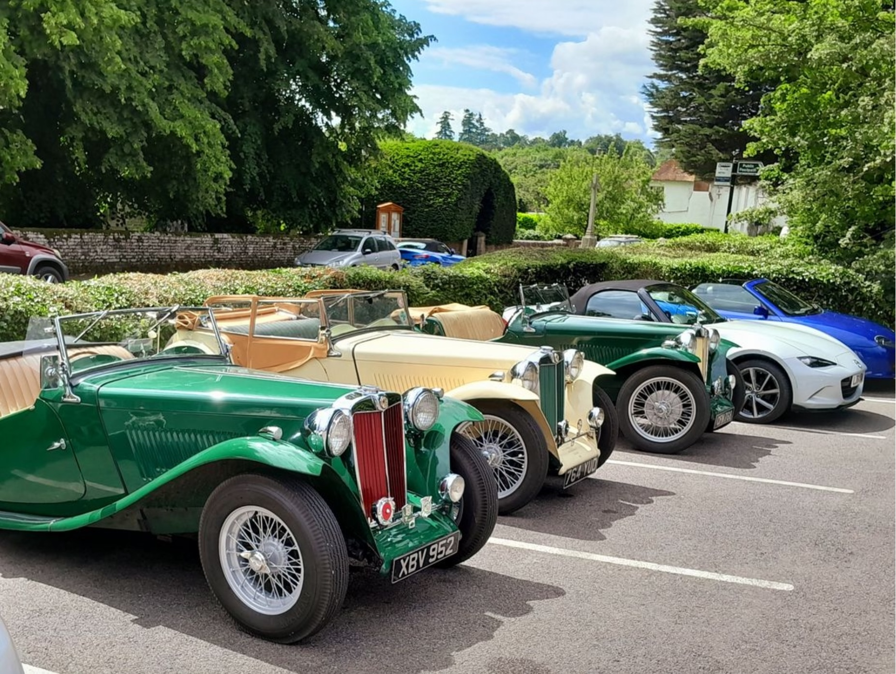

Sussex Wanderers, Warnham to Warnham - 12th June
The first major run of the year, even though it has taken until June to do it. I met David F-B at the Sussex Oak in Warnham where we met up with the rest of the Wanderers and had coffee before going off on the run. As you can see from the photo (extracted from the Wanderers June newsletter), there were three TCs on the run.
It was a fine day and a good run (even the diversion was good), but during the run we could smell petrol. When we got back to the pub I found that the car was spraying petrol all over the road! The hold-up bolt on the rear carburettor had come loose and now the low petrol warning light was on. I was able to tighten the bolt and later, when we left, David followed me to the petrol station at Broadbridge Heath, in case I ran out of petrol.
I did a total of 69 miles, pretty much the same as the last run from/to the Sussex Oak.